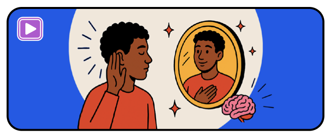
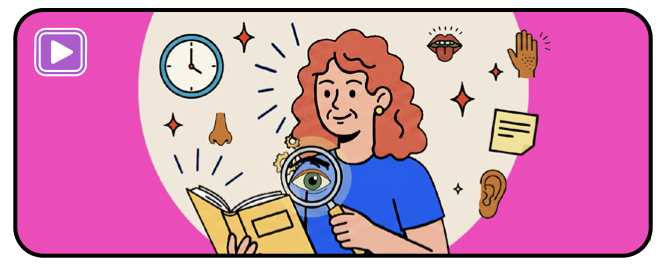
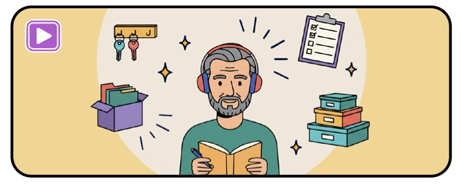
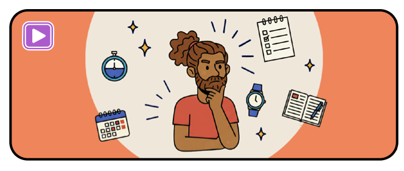
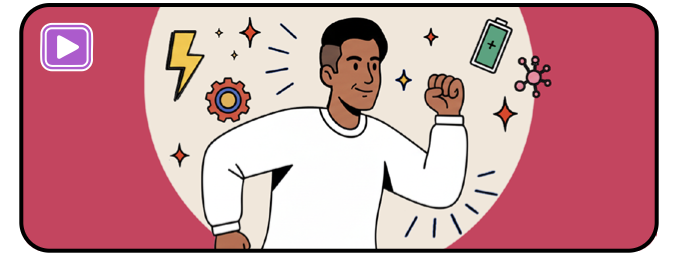
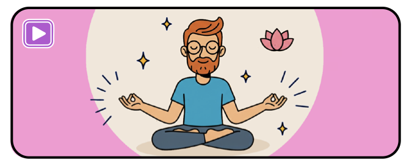
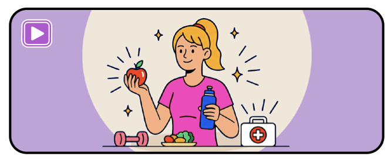
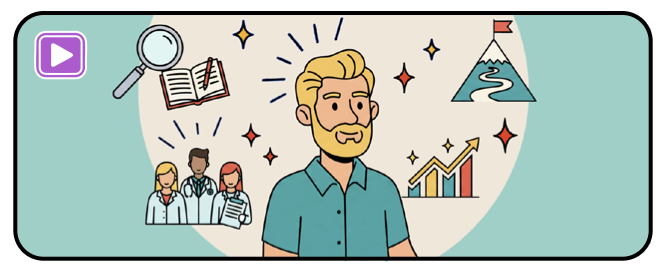
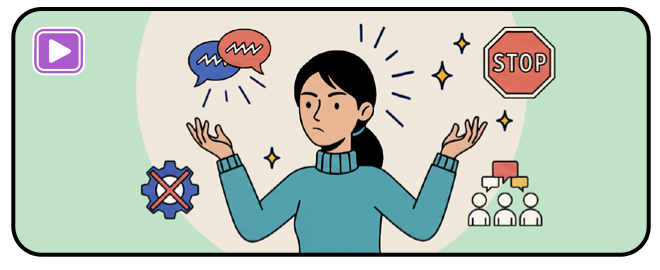
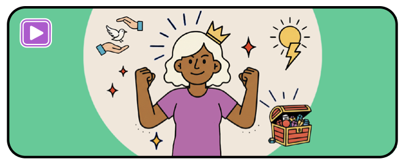

Questionnaire d'auto-évaluation du TDAH
Explorez votre fonctionnement attentionnel et exécutif
Cet outil d'auto-évaluation a une visée psychoéducative et d'orientation vers des stratégies concrètes. Il ne constitue en aucun cas un diagnostic médical. Les scores sont des repères pour observer votre fonctionnement et votre progression, non pour poser un diagnostic clinique. Pour un accompagnement professionnel, consultez un·e professionnel·le de santé qualifié·e.
Vos données restent strictement confidentielles. Toutes vos réponses sont stockées uniquement sur votre appareil (navigateur), aucune information n'est transmise à un serveur externe. Vous gardez le contrôle total de vos données.
Les 10 thématiques explorées
Ce questionnaire couvre les dimensions-clés du fonctionnement quotidien. Chaque rubrique est reliée à un chapitre du guide interactif.

Attention, mémoire et charge mentale
Organisation matérielle et environnement
Gestion du temps et planification
Initiation de l'action et priorités
Impulsivité, émotions et comportements
Vie quotidienne et hygiène de vie
Fonctionnement au travail / études
Interactions sociales et communication
Bien-être mental globalApprivoiser son TDAH au quotidien
Découvrez le guide interactif complet avec des stratégies concrètes pour chaque thématique.
Découvrir le guideL'échelle de retentissement est une synthèse intégrative inspirée de plusieurs outils existants. Elle a été conçue comme un outil d'auto-évaluation à visée psychoéducative et d'orientation vers des stratégies concrètes. Elle s'appuie notamment sur l'échelle de retentissement du TDAH de l'adulte (Lopez & Roques, 2018), la Time Management Behavior Scale (Macan et al., 1990), des outils cliniques développés par Susan Young, le Young Adult Routines Inventory (Grinnell et al.), l'échelle WEMWBS (Tennant et al., 2007), la WFIR-S (Weiss, 2000) et la DIVA-5 (Kooij et al., 2019).
Librement adapté de l'ASRS-v1.1 : Échelle d'autoévaluation des symptômes du TDAH chez l'adulte, Kessler et al., 2005 pour inattention et hyperactivité/impulsivité (18 premières questions).